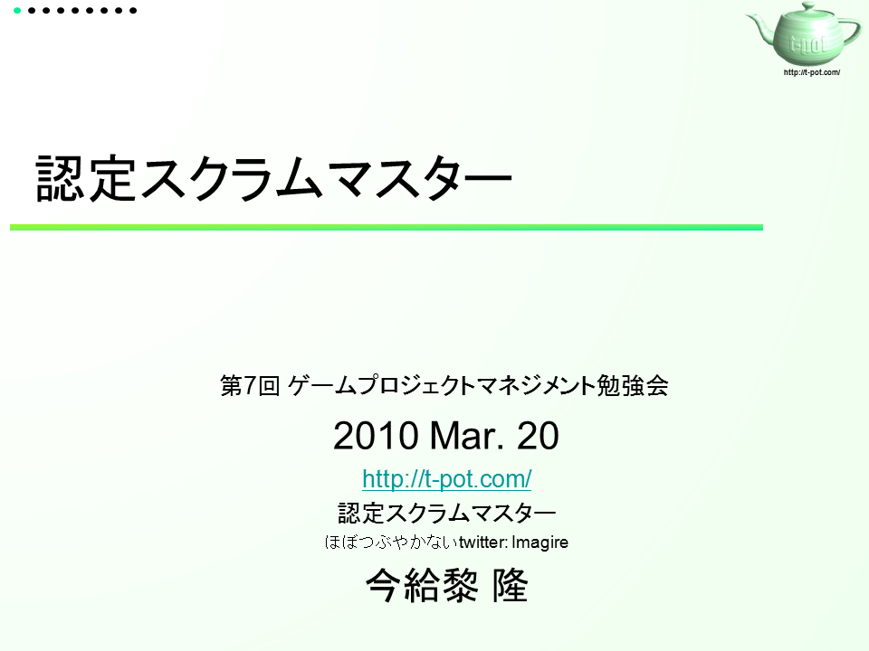
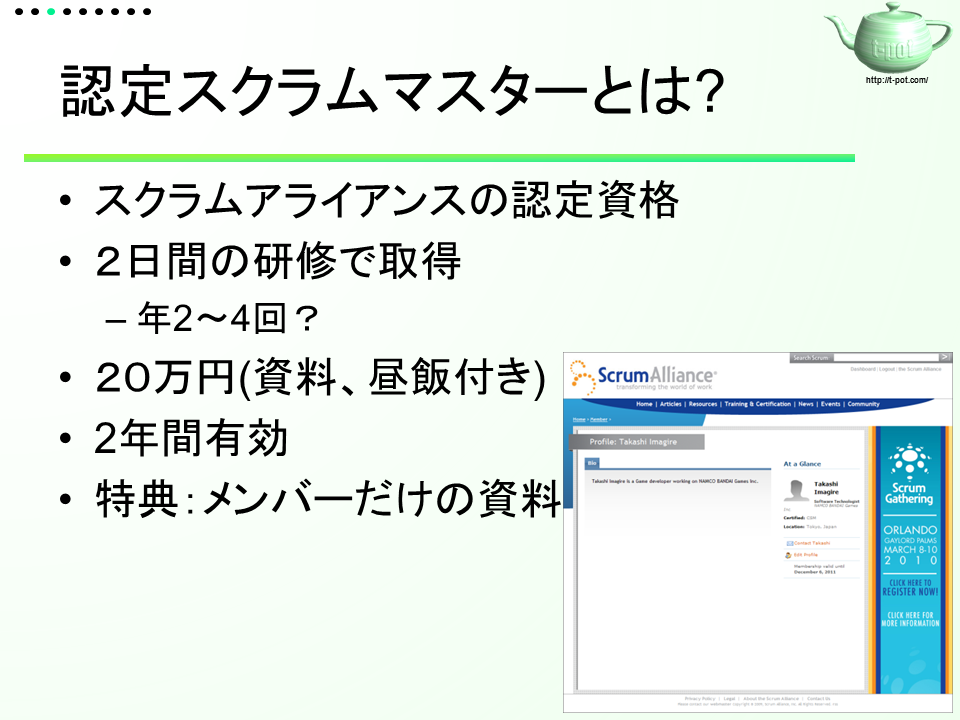
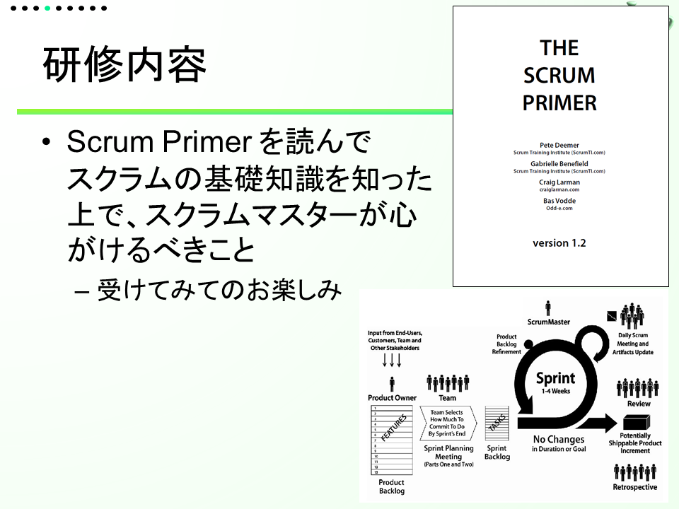
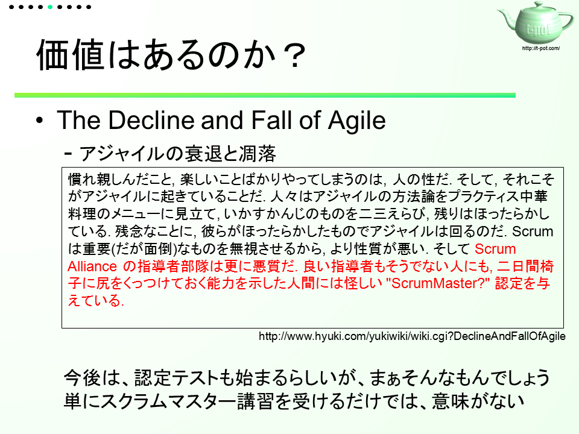
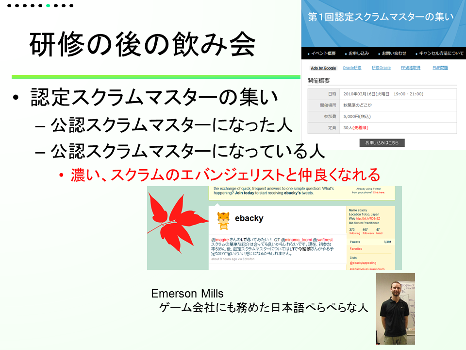
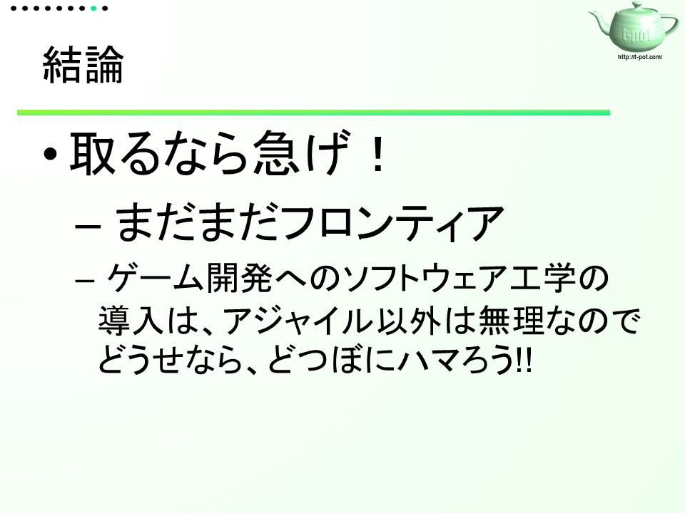

認定スクラムマスターについて
～ GamePM第７回勉強会 ～
■はじめに
佐々木さんが行っているGamePM勉強会の、2010年の3月20日に開かれた第7回勉強会にLT(Lightning Talk:短い時間での講演)で登壇してきました。
毎回、お話を聞いてばかりなので、たまにはアウトプットをしようと思い立ちました。
■スライド
話した内容的は、昨年の12月にひそかに（？）取っていた「認定スクラムマスター」についてです。 といっても、概要にもなっていないさらっとしたものです。







いろいろな都合上、スライドを加工させていただきました。
■さいごに
実際のLTでは、時間をオーバーしてしまいました。難しいですね。